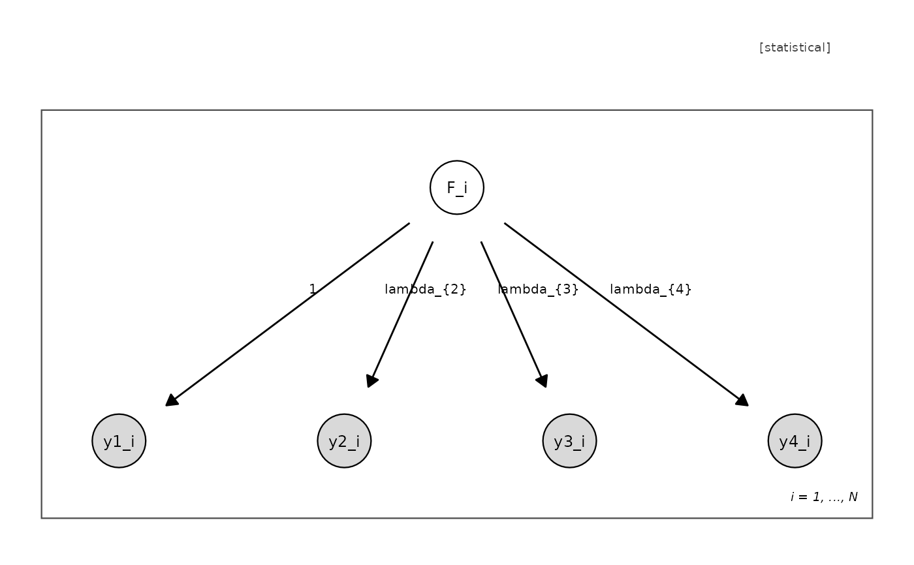

Produces a ggplot2 rendering of a UMG using the same visual
grammar as plot.umg(): fill encodes observability, point shape
encodes support and inferential role, plates are drawn as
rectangles, and the four edge kinds are distinguished by line type
and arrowhead. The returned object is an ordinary ggplot and can be
further customised, faceted, or saved with ggplot2::ggsave().
Usage
umg_ggplot(
model,
theme = umg_theme(),
node_size = 14,
text_size = 3.2,
orientation = NULL,
...
)
# S3 method for class 'umg'
autoplot(object, ...)Arguments
- model
An object of class
umg; layout is computed if absent.- theme
A
umg_themeobject, or a style name passed toumg_theme()("journal","slide","cb").- node_size
Point size for vertices.
- text_size
Text size for vertex labels.
- orientation
Layer direction passed to
umg_layout()("TB"or"LR").- ...
Passed to
umg_layout()when a layout is absent.- object
An object of class
umg(for theautoplotmethod).
Examples
umg_ggplot(umg_factor("F", paste0("y", 1:4)))
